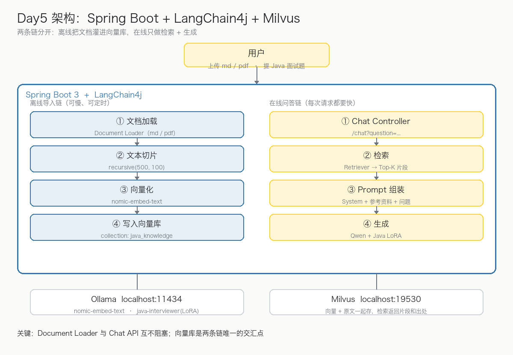
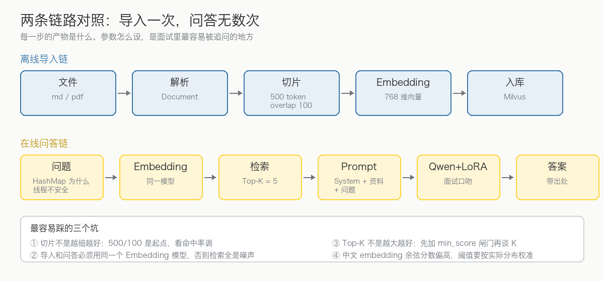

大模型微调实战 Day5：Spring Boot + LangChain4j + Milvus 搭 RAG Pipeline
写给有 Java / Spring Boot 基础、已经把 LoRA 模型接进 Ollama 的开发者。 今天回到你最熟悉的领域，把前四天的成果装进一个真正的 Spring Boot 工程。 文中架构图与流程图为本教程自制示意框图；代码块为可执行片段，真实输出请在本地环境验证。
一、今天要做出什么
Day1～Day3 你有了微调好的 Qwen + Java Interview LoRA，Day4 理解了 RAG + LoRA 的分工。今天用 Spring Boot + LangChain4j + Milvus 把它们装进一个工程，做出 Java AI Interview Agent V3：用户上传 Java面试笔记.md、项目文档.pdf，然后直接用 Java 面试题提问，模型基于这些资料作答。

今天最重要的一个认知是：这是两条链，不是一条。
| 离线导入链 | 在线问答链 | |
|---|---|---|
| 触发时机 | 上传文档时，一次一条 | 用户提问，每次请求 |
| 性能要求 | 可以慢、可以定时跑 | 每次都要快（秒级） |
| 失败处理 | 记日志跳过，不影响服务 | 明确报错，绝不返回空答案 |
| 汇合点 | Milvus 向量库 | Milvus 向量库 |
把这两条链混在一个 Service 里写，是 RAG 工程最常见的腐烂起点——改切片参数会碰坏问答，压测问答会拖垮导入。

二、技术选型
| 层 | 选型 | 说明 |
|---|---|---|
| 后端 | Spring Boot 3 | 你的主场 |
| AI 框架 | LangChain4j | Java 生态最成熟的 LLM 编排层 |
| 向量数据库 | Milvus | 之前已装 milvus-lite，端口 19530 |
| Embedding | nomic-embed-text（Ollama） | 768 维，本地跑不花钱 |
| 大模型 | java-interviewer（Qwen + Java LoRA） | Day3 的产物，Ollama 暴露 |
选型里最重要的一条纪律：导入链和问答链必须用同一个 Embedding 模型。两个不同的模型产出的向量不在同一个空间里，余弦相似度是随机数，检索结果全是噪声——而且这种错误不报异常，只会让答案慢慢变得「玄学」。
三、工程骨架与依赖
java-ai-interview-agent
├── controller/ # ChatController、UploadController
├── service/ # InterviewService（问答编排）
├── rag/ # 导入链：ingest / split / embed / store
├── embedding/ # EmbeddingModel 配置
├── vector/ # Milvus EmbeddingStore 配置
├── llm/ # ChatModel 配置
└── config/ # Bean 装配Maven 三个关键依赖：
<dependencies>
<dependency>
<groupId>org.springframework.boot</groupId>
<artifactId>spring-boot-starter-web</artifactId>
</dependency>
<dependency>
<groupId>dev.langchain4j</groupId>
<artifactId>langchain4j-spring-boot-starter</artifactId>
</dependency>
<dependency>
<groupId>dev.langchain4j</groupId>
<artifactId>langchain4j-ollama-spring-boot-starter</artifactId>
</dependency>
</dependencies>先确认本地模型就位：
ollama list
# java-interviewer qwen3.5:9b 的 LoRA 版
# nomic-embed-text embedding 用
ollama serve # 默认 http://localhost:11434四、离线导入链：从文件到 Milvus
4.1 配置两个模型
application.yml：
langchain4j:
ollama:
chat-model:
base-url: http://localhost:11434
model-name: java-interviewer
temperature: 0.7
embedding-model:
base-url: http://localhost:11434
model-name: nomic-embed-text4.2 切片参数：起点，不是结论
// 500 token 一片，相邻片重叠 100 token
DocumentSplitter splitter = DocumentSplitters.recursive(500, 100);recursive 的含义和 Day4 讲的一致：优先在段落边界切，段落太长退到句子，句子太长才硬切——语义边界优先级从高到低降级。500/100 是常见起点，但不是拍脑袋的结论：切完要跑检索命中率验证，命中低就加大 overlap 或调小 size。
4.3 导入服务
@Service
public class RagIngestService {
private final EmbeddingModel embeddingModel;
private final EmbeddingStore<TextSegment> store;
public RagIngestService(EmbeddingModel embeddingModel,
EmbeddingStore<TextSegment> store) {
this.embeddingModel = embeddingModel;
this.store = store;
}
public void ingest(MultipartFile file) throws IOException {
Document doc = Document.from(new String(file.getBytes(), StandardCharsets.UTF_8));
EmbeddingStoreIngestor.builder()
.documentSplitter(DocumentSplitters.recursive(500, 100))
.embeddingModel(embeddingModel)
.embeddingStore(store)
.build()
.ingest(doc);
}
}@RestController
public class UploadController {
private final RagIngestService ragService;
public UploadController(RagIngestService ragService) {
this.ragService = ragService;
}
@PostMapping("/upload")
public String upload(@RequestParam MultipartFile file) throws IOException {
ragService.ingest(file);
return "success";
}
}这一步做完，Java面试笔记.md 就变成了 Milvus 里的一片向量：每个 chunk 一条记录，向量 + 原文一起存——检索时返回的是原文片段和出处，不是一串浮点数。
五、在线问答链：检索 + 组装 + 生成
5.1 Milvus 向量库
@Bean
EmbeddingStore<TextSegment> milvusStore() {
return MilvusEmbeddingStore.builder()
.host("localhost")
.port(19530)
.collectionName("java_knowledge")
.build();
}5.2 问答服务
@Service
public class InterviewService {
private final ChatLanguageModel model;
private final EmbeddingStore<TextSegment> store;
private final EmbeddingModel embeddingModel;
public InterviewService(ChatLanguageModel model,
EmbeddingStore<TextSegment> store,
EmbeddingModel embeddingModel) {
this.model = model;
this.store = store;
this.embeddingModel = embeddingModel;
}
public String answer(String question) {
// ① 问题向量化 → ② Milvus 检索 Top-5
Embedding queryEmbedding = embeddingModel.embed(question).content();
List<EmbeddingMatch<TextSegment>> matches =
store.findRelevant(queryEmbedding, 5);
// ③ 组装 Prompt：System + 参考资料 + 问题
String context = matches.stream()
.map(m -> m.embedded().text())
.collect(Collectors.joining("\n-----\n"));
String prompt = """
你是严格依据参考资料作答的 Java 高级面试官。
【参考资料】
%s
【问题】
%s
""".formatted(context, question);
// ④ 交给 Qwen + Java LoRA 生成
return model.generate(prompt);
}
}@RestController
public class ChatController {
private final InterviewService service;
public ChatController(InterviewService service) {
this.service = service;
}
@GetMapping("/chat")
public String chat(@RequestParam String question) {
return service.answer(question);
}
}5.3 效果
GET /chat?question=ConcurrentHashMap如何扩容
→ 检索命中：concurrenthashmap.md 第 30 段（扩容迁移机制）
→ 输出：
面试回答：JDK8 的 ConcurrentHashMap 扩容支持多线程协助迁移：
第一，每个线程认领一段桶区间（transferIndex）……
第二，……
第三，……注意答案里出现了资料里才有的细节（transferIndex 认领机制）——这就是 RAG 的价值：LoRA 给口吻和格式，资料给事实和细节。
六、生产上要补的四件事（今天不做，但要知道）
| 事项 | 为什么 | 今天先不做的原因 |
|---|---|---|
min_score 相似度阈值 | 检索不到相关资料时应直接拒答，而不是硬答 | 阈值要按真实 embedding 的分数分布校准，中文模型的余弦分数普遍偏高，0.2 这种通用值往往形同虚设 |
| 引用溯源 | 每段答案标注出自哪个文件的哪个 chunk | LangChain4j 的 EmbeddingMatch 自带 score 与 metadata，加一层包装即可 |
| 异步导入队列 | 大文件导入会阻塞 Tomcat 工作线程 | 演示阶段文档小，直接同步 |
| 流式输出 | 逐 token 返回，体验差距巨大 | SSE 是 Day6 Agent 化的前置，到时候一起做 |
七、完整调用链（面试怎么讲）
面试官问「讲讲你们 RAG 的链路」时，可以这么答：
用户提问后，Spring Boot 通过 LangChain4j 把问题向量化，到 Milvus 里检索 Top-K 相关片段；把检索结果和问题组装成带参考资料边界的 Prompt，发给经过 LoRA 微调的 Qwen 模型；模型结合自身能力和外部知识生成答案。文档导入是独立的离线链路：解析、切片（500/100）、向量化、入库，和问答链只共享 Milvus 这个交汇点。
User → Spring Boot → LangChain4j Retriever → Milvus
→ Prompt Builder → Qwen + LoRA → Answer追问「为什么不全微调进模型？」：微调改的是行为不是知识——知识会过期、更新要重训、还会伤害通用能力。RAG 让知识外置、随传随改，LoRA 只负责口吻和格式，两者各司其职（Day4 的核心结论，在这里落地）。
八、今天完成标准
- ✅ Spring Boot 3 工程跑起来，LangChain4j 接上 Ollama
- ✅
/upload能把 md/pdf 切片向量化写进 Milvus - ✅
/chat能检索 Top-K 并组装参考资料回答 - ✅ 说清两条链的边界与交汇点
- ✅ 面试版调用链讲解过关
下一步 Day6
把「RAG 问答」升级成 Java AI Interview Agent：加入 Tools——查知识库、分析简历、自动出题、自动评分、保存错题。架构变成：
User → Agent → Decision → Tool Calling → RAG / LLM → Answer这一步会把 Day4 的 Tool Calling + MCP + Agent 全部串起来，你的路线也接近一个完整 AI Engineer 项目闭环。